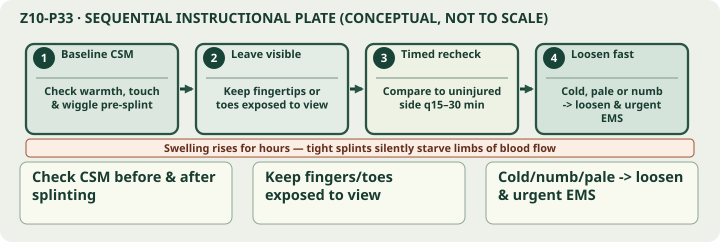

Z10-P33 · Wilderness medicine · New manuscript
Monitor distal circulation, sensation, and movement (CSM) after splinting
Detect dangerous swelling or tight bandages early before restricted blood flow causes permanent limb damage.
When it applies · Every splinted, wrapped, or swollen extremity injury monitored during backcountry waiting or exit.
Equipment · Watch and written patient log.

Actions
- Before applying any splint or wrap—and again immediately after securing it—compare the injured hand or foot against the uninjured side for skin warmth/pink color (Circulation), light-touch feeling (Sensation), and gentle finger/toe wiggle (Movement).[M09, M20]
- Leave fingertips or toes visibly exposed at the end of every splint or wrap so you can recheck CSM every 15 to 30 minutes as swelling progresses.[M09, M20]
- If fingers or toes turn cold, pale, bluish, numb, tingling, or intensely throbbing under a wrap, loosen the ties immediately and recheck within minutes.[M09]
Failure recognition · Wrapping a swollen ankle tightly inside an opaque boot and never checking cold numb toes over a three-hour hike out.[M09]
Verify · Confirm baseline and repeated timed CSM checks (warm/pink, normal touch, intact wiggle) are recorded on the patient log.[M09, M20]
Stop or change course · Persistent loss of warmth, color, or sensation even after loosening wraps is a limb-threatening emergency requiring urgent EMS transport.[M09, T02]
Evidence and editorial notes
- M09 · NIH / MedlinePlus · Fractures (current web edition)
- Section: Suspected Fracture Stabilization and Neurovascular Checks · Conditions: Suspected limb fracture, deformity, or inability to bear weight
Support: Immobilize the injured limb in the position found using padded support without attempting to straighten visibly deformed bones; check circulation, sensation, and movement beyond the injury and arrange evacuation.
Limitations: Open fractures (bone breaking skin) and femur/pelvis injuries carry high bleeding and infection risk requiring urgent EMS. · Conflicting evidence: None; forbids lay fracture reduction in routine field care.
Editorial note: Anchors splinting, neurovascular checks, and evacuation urgency in Z10. · Specialist reviewer: Orthopedics and wilderness medicine
Primary source · checked 2026-11-24 - M20 · NIH / MedlinePlus · First Aid Overview (current web edition)
- Section: Lay First-Aid Scope, Kit Readiness, and Documentation · Conditions: Pre-trip kit preparation and remote patient monitoring
Support: Maintain an inspected, unexpired first-aid kit matched to your actual training, keep written patient observations (time, responsiveness, breathing, symptoms, interventions) for EMS handoff, and practice skills in certified courses.
Limitations: Carrying advanced medical instruments without clinical training adds risk rather than capability. · Conflicting evidence: None; aligns with ARC and NPS-K.
Editorial note: Anchors kit sizing, SOAP-style lay observation logs, and scope-of-practice cards. · Specialist reviewer: Wilderness EMS and clinical education
Primary source · checked 2026-11-24 - T02 · American Red Cross · First Aid Steps (current web edition)
- Section: First Aid Steps > Call 9-1-1 · Conditions: Lay emergency response to unresponsiveness, abnormal breathing or severe bleeding
Support: Activate EMS and get needed equipment. Follow dispatcher directions and act within training.
Limitations: Remote locations may delay EMS arrival, requiring sustained stabilization after activation. · Conflicting evidence: None; aligns with NPS-E.
Editorial note: Mandates early emergency activation and dispatcher adherence. · Specialist reviewer: EMS and wilderness medicine
Primary source · checked 2026-11-24
Source lineage · NIH MedlinePlus Fractures; new manuscript · Classification · New manuscript.